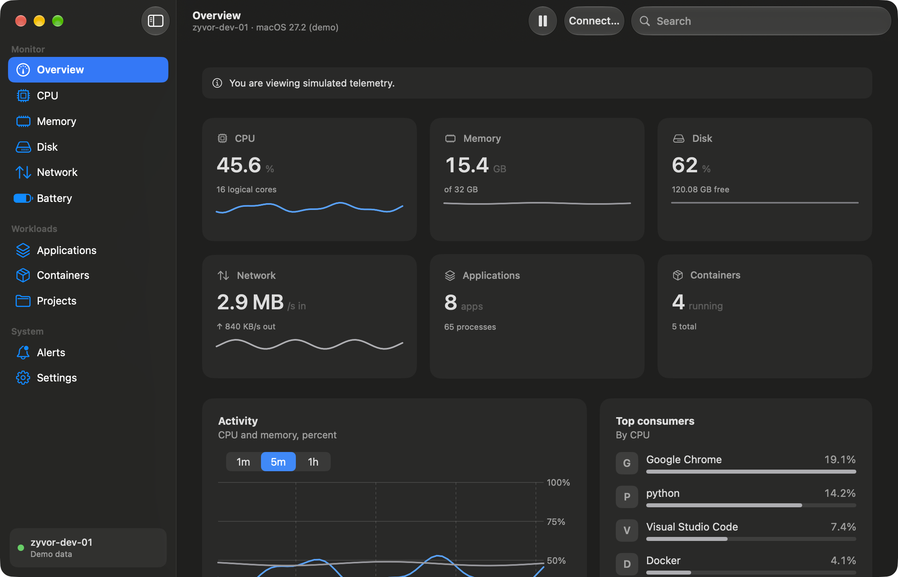
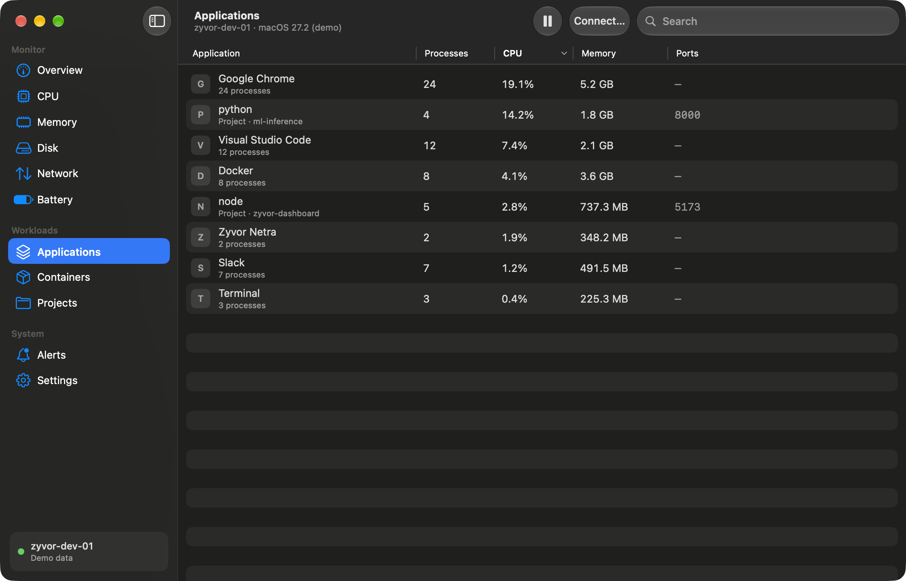
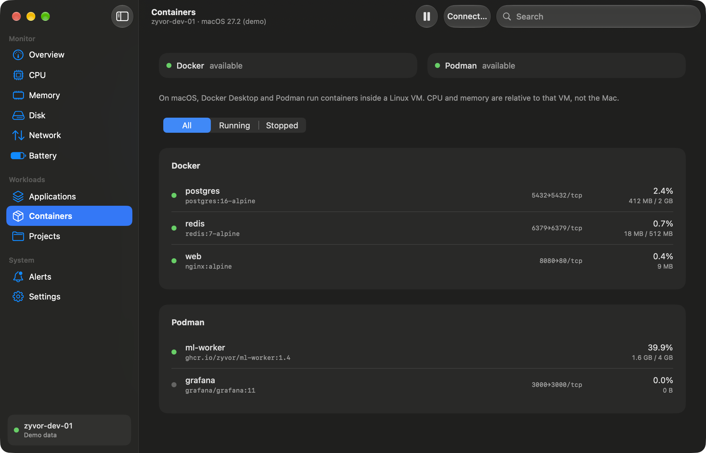
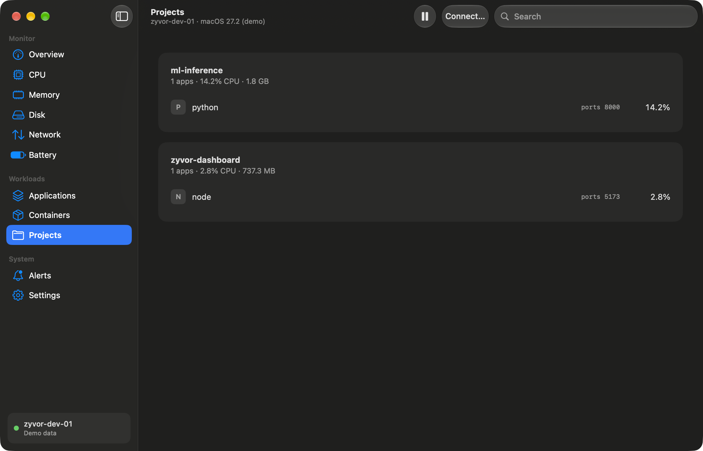
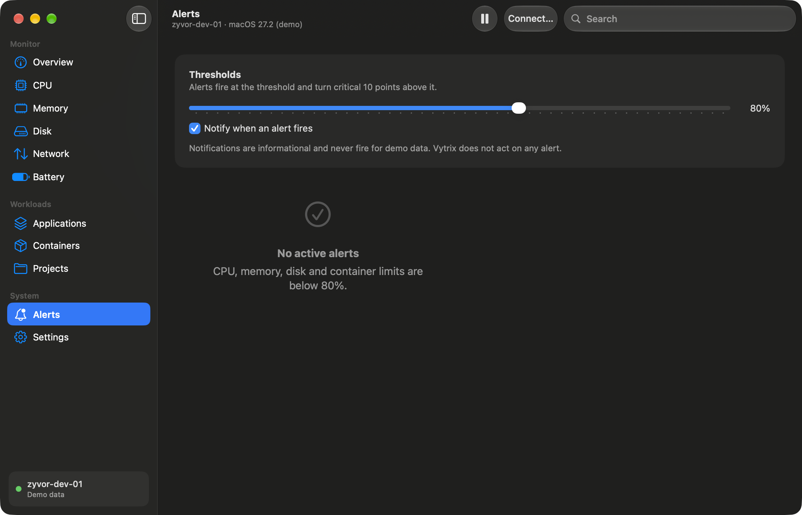

Capacity outlook
Local trend and anomaly detection that estimates time to limit for CPU, memory and disk. No telemetry leaves Vytrix.
Zyvor · system monitor
A read-only system activity monitor for macOS 26 or later. Applications grouped the way you think about them, processes, listening ports, project folders and containers, in one native window and the menu bar.
Download Vytrix 0.9.0Release notes and checksum
Every screenshot is the real app on simulated telemetry (host zyvor-dev-01), not a capture of a real machine.

Scroll through what Vytrix shows. Every image is the real app on simulated telemetry.
CPU, memory, disk and network, and the busiest applications, on one screen. A counter that is not available is shown as absent, never as zero.
Processes grouped by executable or .app bundle, with CPU and memory per application and a process sheet one click away. App memory is RSS.

Container state, CPU, memory against its limit, network I/O and published ports, from read-only calls.

Listening ports tied to the application and its project folder, so a stray dev server is easy to find.

Threshold alerts on CPU, memory, disk and containers, at a level you set. No notifications you did not ask for.

Local trend and anomaly detection that estimates time to limit for CPU, memory and disk. No telemetry leaves Vytrix.
Open any process from an application and see its details in one sheet.
Export the grouped applications table to CSV for a spreadsheet or a ticket.
Disk and battery rows in the menu bar popover next to CPU, memory and the busiest apps.
Processes grouped by executable or .app bundle, with CPU and memory per application. App memory is RSS.
Read-only: it never kills, signals or changes anything.
A SwiftUI app: a menu bar item (CPU, host totals, alert count, busiest apps), local notifications once per alert, a System widget and two Shortcuts actions. Read-only like everything else.
Vytrix 0.9.0 for Mac is Developer ID signed and notarized by Apple, so it opens without a Gatekeeper prompt. It requires macOS 26 or later. Open the DMG and drag Vytrix to Applications.
Free 30-day trial key: sales@zyvor.dev. Write to sales@zyvor.dev for a trial key. To keep using Vytrix afterwards, get a licence at zyvor.dev/buy.
Download Vytrix-0.9.0.dmgRelease notes and SHA-256 checksum
SHA-256: 20f71768b880ed2d110e104f609126c069446dc8ea85f5f3a49b054b71bdee0c
If you run it in production or commercially, buy a production licence: ₹1,999 per Mac per year including GST (about US$20). Teams of 5 or more Macs: ₹3,499 per Mac per year, by invoice. A 30-day trial key is free: sales@zyvor.dev. Earlier ₹899 Supporter purchases keep their perpetual grant for the versions released to date. Not for redistribution or resale. Need a USD invoice or a licence for several entities? Write to sales@zyvor.dev and we will send an invoice.